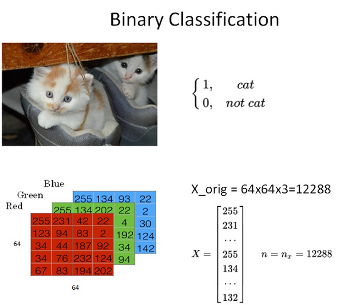

Logistic Regression as a Neural Network
Binary Classification
在二分类问题中，我们的目标是预测出一个二值的输出，即 \(y\) 的值为 0 或 1。例如，我们要预测一张图片中是否包含猫，那么 \(y\) 的值就是 0 或 1。

在神经网络模型中，首先要将图片输入x（维度是\((64, 64, 3)\)）转化为一维的特征向量（feature vector）。方法是每个通道一行一行取，再连接起来。则转化后的输入特征向量维度为\((12288, 1)\)。此特征向量\(x\)是列向量，维度一般记为\(n_x\)
如果训练样本共有\(m\)张图片，那么整个训练样本\(X\)组成了矩阵，维度为\((n_x,m)\)。\(Y\)是一个行向量，维度为\((1,m)\)。
Logistic Regression
逻辑回归模型一般用来解决二分类（Binary Classification）问题。
-
The input features vector: \(x \in \mathbb{R}^{n_x}\), where \(n_x\) is the number of features.
-
The training label: \(y \in \{0, 1\}\).
- The weights: \(w \in \mathbb{R}^{n_x}\), where \(n_x\) is the number of features.
- The bias: \(b \in \mathbb{R}\).
The output of the logistic regression is: $$ \hat{y} = \sigma(w^T x + b) $$ where \(\sigma\) is the sigmoid function:

Sigmoid function将 \(\hat{y}\) 的值限制在0到1之间。
Logistic Regression Cost Function
Lost Function (aka. Error Function) 用来衡量模型的好坏。损失函数需要是凸函数，用于后续优化，因此像\(L(\hat{y}, y) = \frac{1}{2}(\hat{y} - y)^2\)这样的函数就不适合。这里给出逻辑回归的损失函数：
Cost Function 是所有训练样本的平均损失函数，即对给定的\(w\)和\(b\)，\(\hat{y}^{(1)}, \hat{y}^{(2)}, \cdots, \hat{y}^{(m)}\)与 \(y^{(1)}, y^{(2)}, \cdots, y^{(m)}\)误差的平均值：
Loss Function针对单个样本，Cost Function针对整个训练集。
Gradient Descent

Gradient Descent的目标是找到使得Cost Function最小的\(w\)和\(b\)。为了找到最小值，我们可以对\(w\)和\(b\)初始化任意值，然后不断迭代，每次迭代都朝着梯度的反方向移动一小步，直到达到最小值。
其中\(\alpha\)是学习率（learning rate），用来控制每次迭代的步长。
Logistic Regression Gradient Descent
假设输入数据x的维度n=2，则计算流程如下:

这里的 \(a\) 是 \(\hat{y}\) 。
整个从参数\(w\), \(b\)推导到损失函数值的过程被称为正向传播（forward propagation）。而从损失函数值反向推导到参数\(w\), \(b\)的过程被称为反向传播（backward propagation）。
Gradient Descent on m Examples
迭代算法be like：
J = 0, dw_1 = 0, dw_2 = 0, ..., dw_n = 0, db = 0
# iterate over all training examples
for i in range(m):
# forward propagation
z_i = w^T x_i + b
a_i = sigmoid(z_i)
J += -[y_i log(a_i) + (1-y_i) log(1-a_i)]
# backward propagation
dz_i = a_i - y_i
for j in range(n):
dw_j += x_j dz_i
db += dz_i
# update parameters
J /= m
dw_1 /= m, dw_2 /= m, ..., dw_n /= m, db /= m
现在可以结合学习率\(\alpha\)来更新参数了：
由于训练数据往往是非常大的，因此for loop很慢。我们可以通过向量化（vectorization）来加速计算。